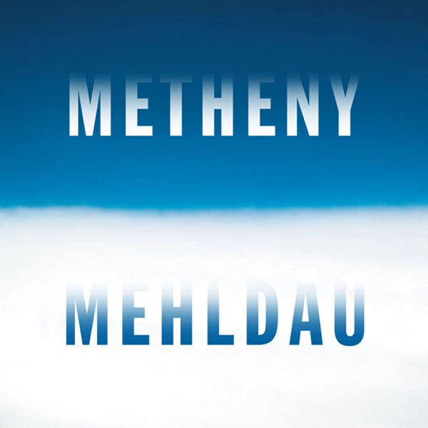
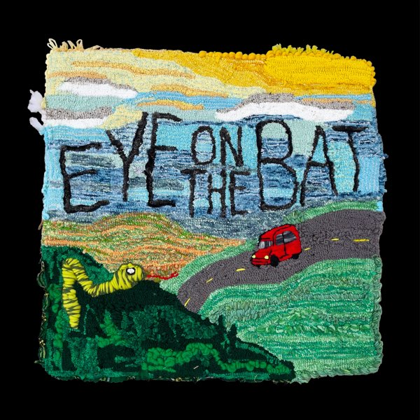
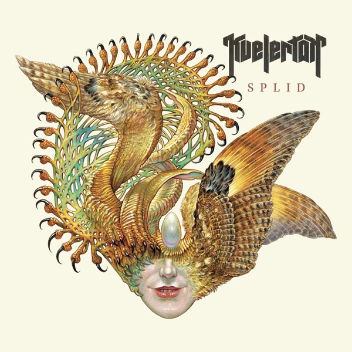
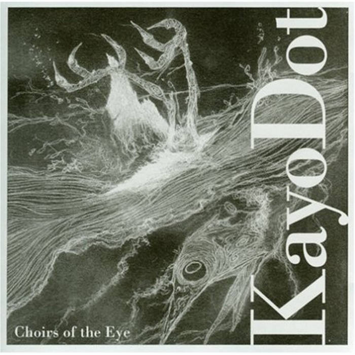

v0.3.4
client summaries

Run The Jewels
v0.3.4
client summaries
Run The Jewels
v0.3.3
css refactoring
Interpol
v0.3.2
new global footer

Pat Metheny & Brad Mehldau
v0.3.1
Added phonetic to the footer for the hell of it

Palehound
v0.3.0
Added changelog page and version skill

Kvelertak
v0.2.0
Added 'listening to' in the footer

Kayo Dot
v0.1.1
Tuned section spacing and parallax motion
Knower
v0.1.0
Initial layout
Emma Ruth Rundle